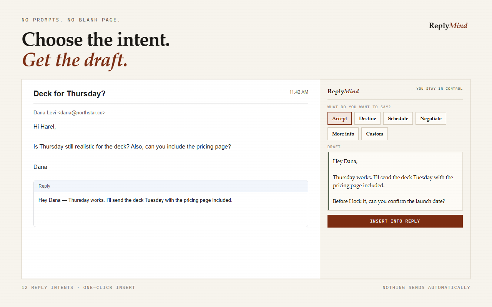
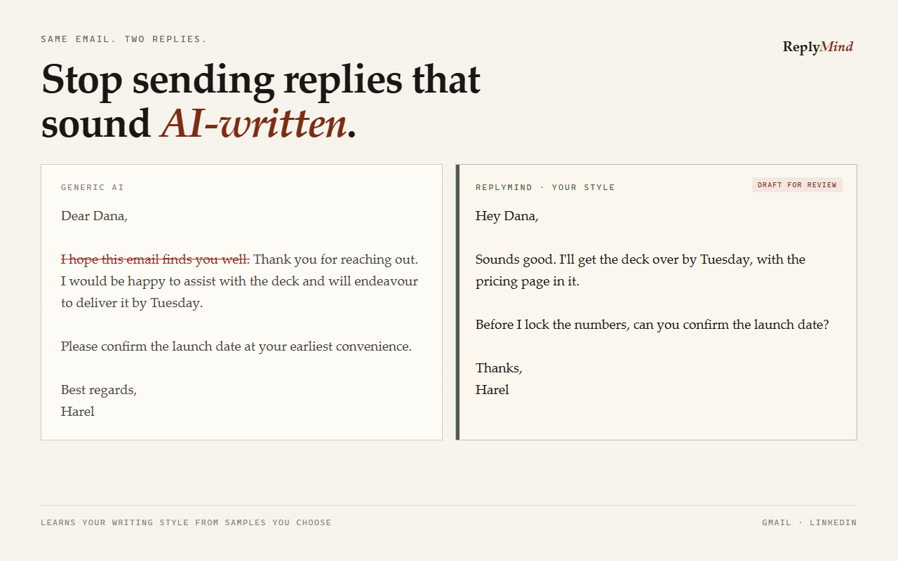
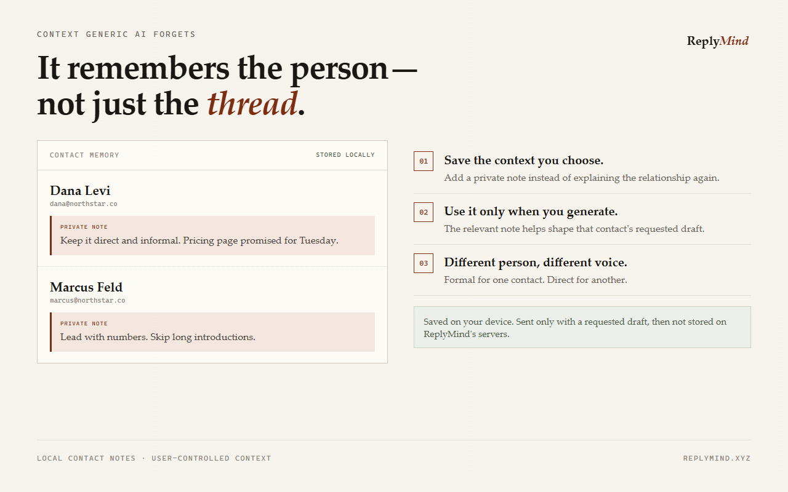
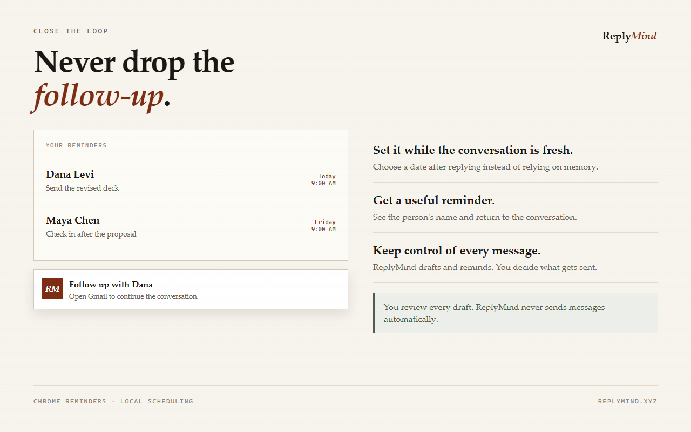
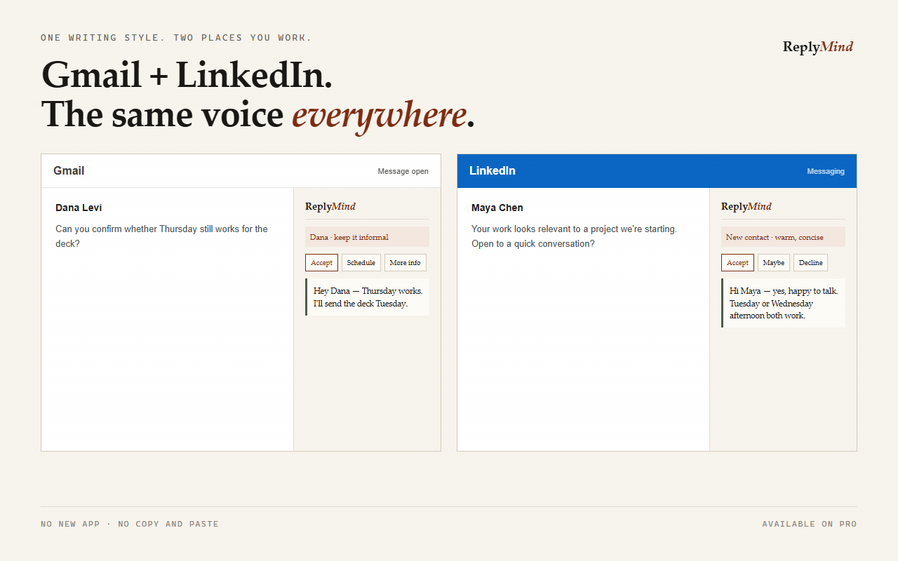

Choose the intent.
Tell ReplyMind what the reply needs to do.
ReplyMind Pro
Choose the intent. Let ReplyMind draft in the voice profile you created. Review every word.
The starting point
Tone, timing, relationship, and outcome must fit into a few lines.
ReplyMind keeps those choices close to the active message.
Step one
Choose accept, decline, maybe, schedule, delegate, ask for information, check in, negotiate, thank, apologize, introduce, or custom.

Real extension interface: the active message and intent picker appear together.
Tell ReplyMind what the reply needs to do.
Use the voice profile and context you choose.
Edit, insert, and decide whether to send.
Step two
Voice setup analyzes your samples in the browser. The derived profile helps guide the draft.
The source samples are not uploaded or saved.

Real extension interface: a comparison between generic wording and a closer voice.
Step three
ReplyMind is built around clear reply intents. Custom instructions are available on Pro.
A draft is a draft. Review it before it leaves your hands.
Context you control
Save a local contact note when a relationship detail matters. A relevant note can accompany the request you make.
It stays visible, editable, and deliberate.

Real extension interface: local contact context is available when you choose it.
Keep the thread
Follow-up reminders are created by you and shown through browser alarms.
They do not require ReplyMind to scan your inbox.

Real extension interface: a locally managed follow-up reminder.
Across the conversation
Pro supports reply drafting in both surfaces. The message remains yours to inspect.

Real extension interface evidence from Gmail and LinkedIn messaging.
Privacy and review
Generation uses the active message, chosen intent, style instructions, and relevant contact context.
ReplyMind’s policy says active message and generated reply text are discarded after the request. Optional analytics require consent and exclude message content.
A clearer finish
ReplyMind does not promise that every draft is ready. It gives you a focused first version to work from.
Illustrative outcome scene, not a product result.
ReplyMind Pro
Or $180/year, billed annually.
Start ReplyMind ProPaddle checkout · 14-day refund policy · Cancel anytime
Before you decide
No. It creates a draft for you to review, edit, insert, and send.
The extension works with the message you are actively handling when you invoke it. It does not scan your inbox.
Contact notes are stored in browser extension storage. A relevant note can accompany a requested draft.
Yes. The current free plan includes 15 replies and five core intents.
ReplyMind publishes a 14-day refund policy. Requests follow the published refund terms.